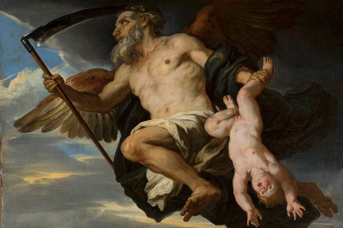
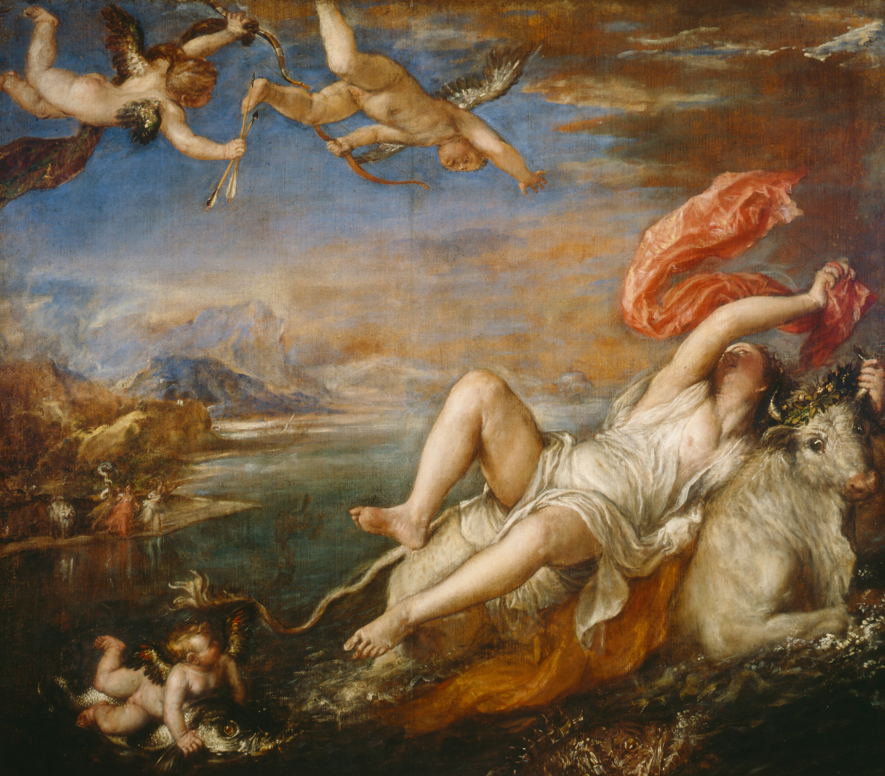
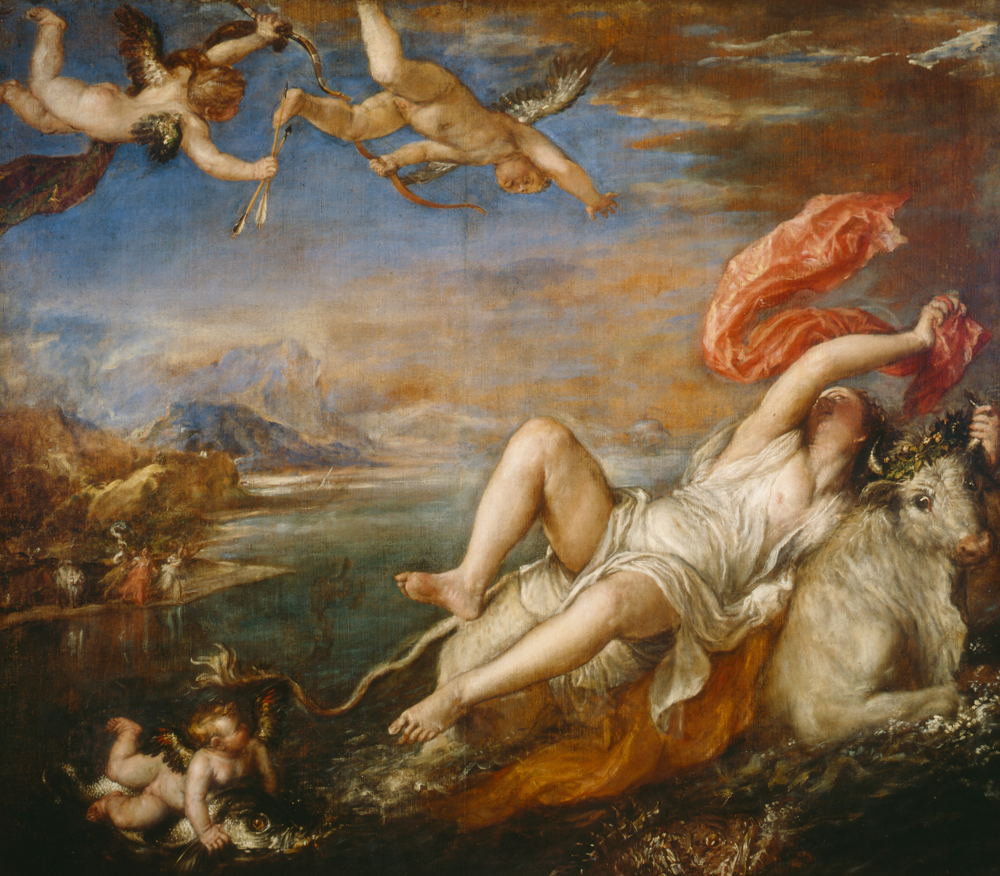

Zeus
Introducción
Zeus también llamado Júpiter es la divinidad más importante de todo el panteón griego. Era conocido como el padre de los dioses, soberano de mortales e inmortales. Zeus es el dios soberano, aquel ante el que todas las criaturas, humanas y divinas, se someten. Su ámbito de influencia es el cielo en todas sus manifestaciones: la luz, las nubes, las tormentas y los truenos. Portando su cetro y sentado en su trono, Zeus rige los destinos del universo, en ocasiones benévolo, en ocasiones implacable. Sin embargo, las debilidades humanas también hicieron presa a menudo en este dios todopoderoso, tal y como demuestran sus frecuentes infidelidades amorosas.


Nacimiento
Zeus es hijo de Crono y Rea. Crono, temeroso de correr la suerte que él mismo había dispensado a su propio progenitor, tomó la
decisión de ir devorando a todos sus hijos a medida que éstos iban naciendo, de modo que ninguno de ellos pudiera desafiarle y arrebatarle el poder una vez llegado a la edad
adulta. de este modo, el pequeño Hades fue engullido por el poderoso Cronos.

Sin embargo, Zeus, otro de los hijos de Crono y Rea, consiguió sobrevivir gracias a un engaño de
su madre, Rea, y al llegar a la edad adulta, desafió y derrotó a su padre, liberando a todos sus hermanos de las entrañas de Crono. de este modo, Hades quedó libre y se unió
a su hermano Zeus en su lucha contra los titanes para hacerse con el control del mundo, la guerra conocida como la Titanomaquia. El dios Hades poseía un arma única, forjada
por los cíclopes en las fraguas de las entrañas de la tierra: un casco de invisibilidad. Oculto gracias a los poderes de este artefacto, logró infligir grandes daños a sus
enemigos.Tras la victoria de Zeus, éste decidió repartir el universo con dos de sus hermanos. Eligió para sí mismo los cielos, mientras reservaba el gobierno de las aguas y
los océanos a Poseidón. A Hades le correspondió el mando sobre el mundo subterráneo, lugar al que se dirigían las almas de los mortales tras su muerte. de este modo, el dios
Hades se convirtió en el señor de los infiernos.
Algunos mitos
Zeus y Calisto
Calisto era una joven cazadora del cortejo de Artemisa, y como tal había jurado conservar su virginidad para seguir disfrutando de la amistad de esta diosa. Sin embargo, el dios Zeus se encaprichó de ella y, haciéndose pasar por la propia Artemisa, se acercó a la joven y la violó. Calisto quedó de esta manera embarazada del rey de los dioses. Aunque la joven trató de ocultar su estado a Artemisa, la diosa acabó por descubrir que la joven había violado el juramento de permanecer vírgen y, como castigo, transformó a Calisto en una osa y la expulsó de su cortejo. Calisto dio a luz a un bebé al que llamó Arcas, fundador de la estirpe de los arcadios. Para compensarla por sus sufrimientos, Zeus recompensó a Calisto convirtiéndola tras su muerte en una constelación, la Osa Mayor.
Zeus y Europa
La princesa Europa era hija del rey de Tiro, una de las ciudades fenicias más poderosas del Mediterráneo oriental. El dios Zeus, prendado de su belleza, decidió seducirla. Para ello, tomó la forma de un hermoso toro blanco, y, camuflado como este animal, se mezcló entre las reses propiedad del rey de Tiro que pastaban cerca de la costa. La princesa Europa se encontraba paseando por la playa cuando divisó entre el ganado al espléndido toro blanco. Atraída por su belleza, la joven se acercó al toro y comenzó a acariciarle el lomo y la cabeza. El animal se dejó tocar por la joven y le ofreció su lomo para que ésta montara sobre él. Divertida, la princesa se subió sobre el animal, creyéndole inofensivo. En aquel momento, el toro se lanzó en una cabalgada que no se detuvo ni al llegar a la costa: Zeus continuó corriendo sobre las olas del mar, llevando consigo a la aterrorizada Europa. Ambos atravesaron las aguas hasta llegar a la isla de Creta, lugar donde Zeus le reveló a la joven su auténtica forma. Europa, fascinada ante la belleza del dios, quedó prendada al instante y se convirtió en la amante del padre de los dioses. Éste, a cambio, tras hacerle numerosos regalos, la convirtió en la primera reina de Creta, iniciándose con ella una larga dinastía de reyes cretenses.
 
